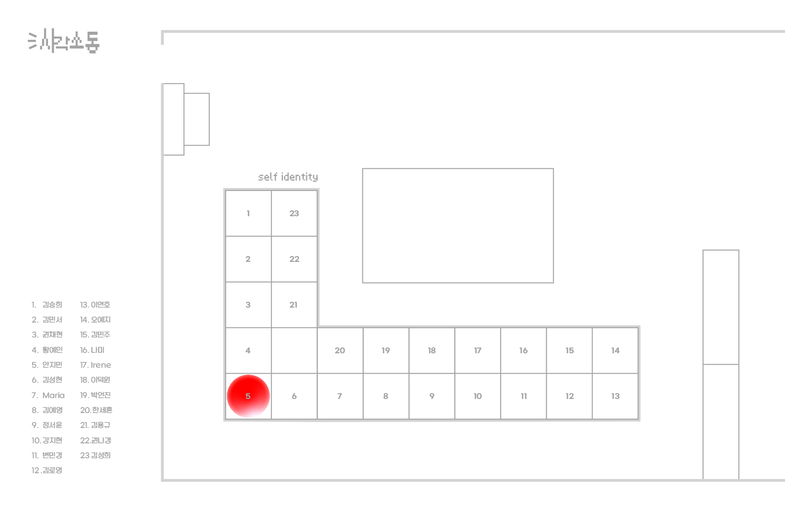

MAPPING YOUR TIME
VD1
얌얌냠냠
사람이 살면서 가장 중요한 의식주 중에서도 식을 주제로 표현한 지도이다. 장기 중의
하나인 위의 형태와 여러가지 아이콘을 사용하였다.
SHAPE POSTER
VD1
삼각흐름
사람들이 보편적으로 생각하는 집의 가장 큰 특징이 삼각형임을 활용하여 디자인 하였
다.
BOUND BOOK OF SCRAPS
VD1
두루두루말이
다양한 화장품 샘플을 모아 책으로 제작하였다. 언어와 디자인 스타일을 중심으로
구분하였고 말리는 형태로 제작되어 쉽게 풀어 쓸 수 있으며 마치 현수막처럼 광고하
는 효과도 존재한다.
MINIMALISM POSTER
VD1
민들레가 가지고 있는 감성적인 느낌을 살려 미니멀 포스터를 디자인 하였다.
생명력이 강하고 꿋꿋이 버티는 민들레의 숨겨진 특성을 가지고 맥시멀 포스터를 디자
인 하였다.
MAXIMALISM POSTER
VD1
민들레가 가지고 있는 감성적인 느낌을 살려 미니멀 포스터를 디자인 하였다.
생명력이 강하고 꿋꿋이 버티는 민들레의 숨겨진 특성을 가지고 맥시멀 포스터를 디자
인 하였다.
GENERATIVE SYSTEM
VD1
수호 캐릭터
민들레를 불며 소원을 비는 모습을 보며 병을 앓고 있는 아이들에게 각자 만의 수호
캐릭터를 디자인 하였다. 응원 문구를 수집하여 캐릭터들의 성격과 대사에 반영하여
응원 카드 또한 제작하였다.
5 PATTERN POSTER
VD2
기록하는 것을 좋아한다는 점에서 기록할 때 사용하는 펜을 떠올렸다. 펜의 잉크와
서서히 잊혀져가는 기억 등을 소재로 패턴을 디자인 하였다.
EXHIBITION IDENTITY
VD1
시각소동 : 시각소동이라는 이름에 맞게 ‘소동’이라는 이미지가 잘 드러나는 요소들을
통해 표현하였다.
전시디입니다 : 이름이 언어유희인 만큼 재미 요소들을 많이 사용하였고 레트로 느낌
과 합쳐 표현하였다.
SELF IDENTITY
VD2
이 위치로 직접 가서 확인해보세요!
